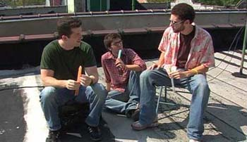

Web/TV: We Need Girlfriends
ãetrtek, 7. februar 2008. u 10:57 AM
Piše: La Lara
Rubrike: Creative Economy | Internet | Lifestyle | Umetnost/Arts
Tri mlada muškarca i serija od 11 epizoda (najkraća traje nešto ispod šest minuta, najduža preko 14) napravljenih bez budžeta, samo za web. I šta još: Likovi koji su pre same serije kreirani kao prave ličnosti na My Space, kultni status u nekim krugovima, pažnja mainstream medija.
Tekst sa celom pričom na sajtu NYT.
Zvanični sajt serijala.
A epizode i na starom dobrom You Tube.
 RSS feed
RSS feed
 sadržaji se objavljuju pod
sadržaji se objavljuju pod
Komentari
Ja cu pogledati, bas me zanima, ali sad samo da kazem bravo za preporuku za Aniin text o Poljacite! Omg, hilarious!
Feisty | 08.02.08 06:35
Ja sam pogledala prvih devet epizoda za sada, mnogo je slatko, pravi Sex & the City za decake
la lara | 08.02.08 09:00
Ko ne moze da gleda sve, neka pogleda bar 3. epizodu, bavi se fenomenom My Space (a moze i Facebook), mnogo je smesna
La Lara | 08.02.08 11:34
Gledala sam sinoc prvu i trecu, super su.
feisty | 10.02.08 19:52